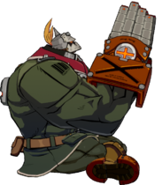
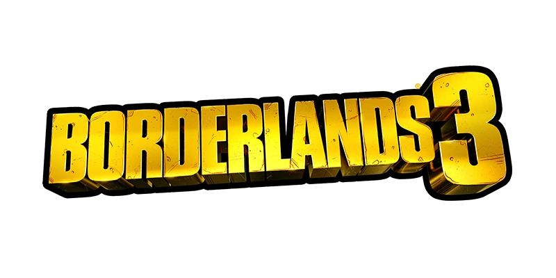
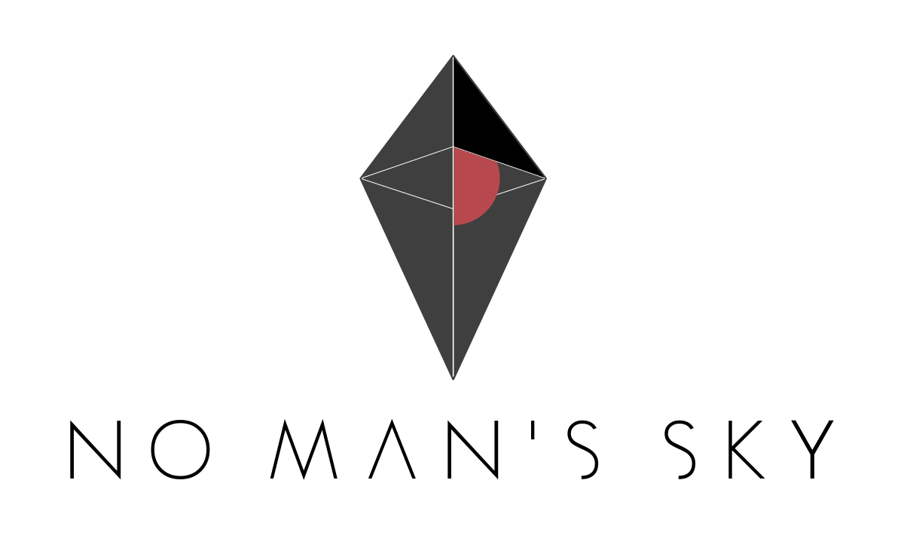

Valentín Fischer

¡Bienvenidos a mi Portfolio!
Un poco sobre mí:
Hola, yo soy Valentín Fischer, estudiante de 20 años en la UnRaf, y mas precisamente en la carrera de producción de videojuegos.
En 2020, egresé de la EETP N°460 "Guillermo Lehmann" de Rafaela como técnico en informática, y desde ahí, me encuentro estudiando en la UnRaf
(Donde ya me encuentro en mi segundo año de carrera de productor de videojuegos)
Como es de esperar, los juegos son mi hobby favorito, y éstos son algunos de ellos:



Aquí, los links a los ejercicios requeridos: